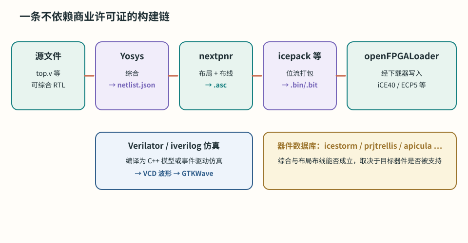

开源 FPGA 工具链：分工、边界与一条可复现流程
Yosys 综合、nextpnr 布局布线、Verilator 仿真、openFPGALoader 烧录——它们各自解决哪一段问题，哪些器件已经可用，以及哪些地方不能替代商业工具。
01 / 为什么值得有一条开源流程？
商业 FPGA 工具链的许可证往往绑定到特定机器和操作系统，在一台公共 CI 服务器上装一套、给几十个学生开一套，都会碰到实际障碍。而很多小型设计——一个 iCE40 上的状态机、一个控制接口——并不需要旗舰级工具的全部能力。
开源工具链（Yosys、nextpnr、Verilator、openFPGALoader 等）把“从 RTL 到可烧录比特流”分成几个可独立替换的步骤。这对教学、原型验证和自动化构建有明显好处：命令行可脚本化、输出可归档、不需要许可证服务器。但它也并非免费替代品——能支持哪些器件、时序分析能做到多深，差异很大。
02 / 各组件分别负责什么？
理解开源工具链的关键，是记住它没有“一个全能软件”，而是一组各管一段的小工具，靠标准格式的中间文件衔接：
| 组件 | 负责的阶段 | 输入 / 输出 |
|---|---|---|
| Yosys | RTL 综合：把行为级描述转为门级网表 | .v → JSON 网表或 EDIF |
| nextpnr | 布局布线：把网表映射到具体器件的物理资源 | 网表 + 管脚约束 → .asc |
| icestorm / prjtrellis / apicula | 器件数据库与位流工具（分别面向 iCE40 / ECP5 / GOWIN） | 生成/打包位流 |
| openFPGALoader | 经下载器把位流写入器件或配置存储器 | .bit/.bin → 硬件 |
| Verilator / Icarus Verilog | 逻辑仿真 | RTL + testbench → 可执行模型 / VCD |
| GTKWave | 查看仿真产生的波形 | VCD/FST |
其中 Yosys → nextpnr → 位流打包 是主干，其余工具是旁支。关键区别在于：Yosys 与器件无关，nextpnr 则必须针对某个器件家族（如 iCE40、ECP5）才能工作，因为布局布线需要知道器件里到底有多少 LUT、多少互连段。

03 / 一条 iCE40 流程长什么样
以一个小型 iCE40 设计为例，整条链就是几个命令。下面是命令结构示意；器件型号、封装、约束文件名与管脚号必须换成自己开发板手册上的真实值：
# 1. 综合：读入 RTL，输出门级网表
# （具体 pass 序列可作为脚本文件交给 yosys -s 执行）
yosys -p 'read_verilog top.v; synth_ice40 -top top -json netlist.json'
# 2. 布局布线：指定器件与封装，读入管脚约束
nextpnr-ice40 --up5k --package sg48 \
--json netlist.json --pcf board.pcf \
--asc routed.asc
# 3. 打包位流
icepack routed.asc bitstream.bin
# 4. 烧录到开发板
openFPGALoader -b bitstream.bin 管脚约束使用 .pcf 文件，语法上比 XDC/QSF 简单得多，只描述“哪个信号接到哪个管脚”：
# board.pcf：管脚号必须来自开发板原理图/手册，不得凭记忆填写
set_io clk
set_io rst_n
set_io led <pin> 换成猜测的数字，可能让设计看似编译成功，却把信号接到错误的物理引脚甚至电源管脚上。工具不会替你先核对板卡，这一步必须人工对照原理图完成。把这四个命令写进脚本后，整条链就可以在无图形界面、无许可证服务器的环境下重复执行，产物（网表、.asc、位流）也能归档。这正是它适合教学和 CI 的地方：每一步都能看到具体的中间文件，而不是一个不可见的“生成”按钮。
04 / 器件支持与工作边界
开源工具链的能力不是均匀分布的：它高度依赖“器件数据库”的完成度。一个器件被支持，意味着有人逆向或从公开资料重建了它的位流格式、互连拓扑与时序模型。不同项目的成熟度差别很大：
| 器件系列 | 相关项目 | 说明 |
|---|---|---|
| Lattice iCE40 | icestorm、nextpnr-ice40 | 开源流程最早成熟的一类，资料与示例最多 |
| Lattice ECP5 | prjtrellis、nextpnr-ecp5 | 具备 DSP/BRAM 与较高资源量的开源支持 |
| GOWIN | Apicula、nextpnr-gowin | 由社区项目提供器件数据与位流工具 |
| AMD 7 系列等 | nextpnr-xilinx / F4PGA | 可用但与商业实现相比能力与成熟度有差异 |

因此“开源工具链能不能用”这个问题，正确的问法是两个：我的目标器件在不在支持列表里？ 以及 我的设计对时序分析的需求有多深？ 前者决定综合与布局布线能不能跑完，后者决定结果能不能被信任。
05 / Verilator：把 RTL 编译成 C++ 模型
Verilator 与常见的事件驱动仿真器机制不同：它把可综合 RTL 翻译并编译成 C++/SystemC 模型，再与你自己写的 C++ 测试台链接成可执行文件。得到的是一个本地可执行程序，因此可以在每次运行中获得稳定的性能，也方便集成进 CI。
它有两种典型用法：一是只做静态检查，不生成模型；二是生成可执行仿真并导出波形：
# 只做 lint：不生成模型，只报语法/宽度/风格问题
verilator --lint-only --top-module top top.v
# 生成 C++ 模型并与测试台链接，导出 VCD
verilator --cc --exe --trace --build -j 0 \
--top-module top top.v sim_main.cpp
./obj_dir/Vtop # 运行仿真，得到波形文件一些使用 Verilator 时必须知道的语义差异：
- 默认是两态（0/1），而不是 Verilog 的四态（0/1/X/Z）。依赖 X 传播来暴露未初始化信号的 testbench 在 Verilator 下可能看不到预期行为；相关开关与语义应以 Verilator 官方文档 为准。
- 它不是完整事件仿真器：延迟、时序检查、部分非可综合构造的支持有限，版本之间也在演进（如较新版本才增强了对时序语义的支持）。
- 测试台通常用 C++ 或 SystemVerilog 写，而不是传统 Verilog
initial激励；这是它快的一大原因，也是上手成本。
与 Icarus Verilog 相比，后者保留四态与更贴近标准的语义，适合小规模、强调正确性的 testbench；Verilator 适合规模较大、需要反复回归的场景。两者互补，不存在单纯的替代关系。
06 / 什么时候该换回商业工具？
把选择变成几个具体问题，而不是“开源 vs 商业”的立场之争：
| 你的情况 | 更适合的方向 |
|---|---|
| 目标器件在开源支持列表里，设计规模较小 | 开源流程可用，且易脚本化 |
| 需要严格时序签核、工艺角落与官方报告 | 厂商工具 |
| 需要厂商原语、IP 或高速收发器 | 厂商工具 |
| 需要在 CI 中自动跑回归、不需许可证 | 开源仿真（如 Verilator / Icarus） |
| 做教学、原型与算法验证 | 开源流程较容易上手、成本低 |
实际工程中常见的是混合使用：用开源工具做仿真与脚本化检查，用厂商工具做最终实现与签核。两者之间可以用标准格式（网表、EDIF 等）交换，但要注意：从一种工具链得到的资源与时序数字，不能直接拿来描述另一种工具链的结果。
思考练习：为什么“开源综合器与商业综合器就差几个百分点”这类说法很难直接验证？
因为资源与时序结果同时取决于器件、约束、工具版本与优化目标。除非固定同一份 RTL、同一器件与同一组约束，并在同一工具版本下分别跑完整流程、对比具体报告，否则“差几个百分点”无法指向具体的测量条件。